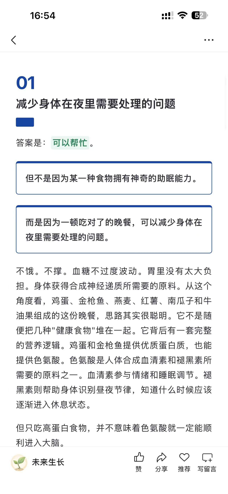
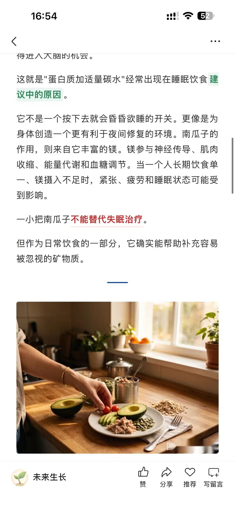
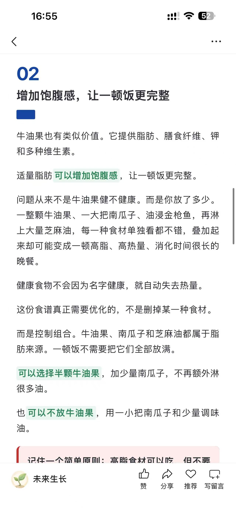
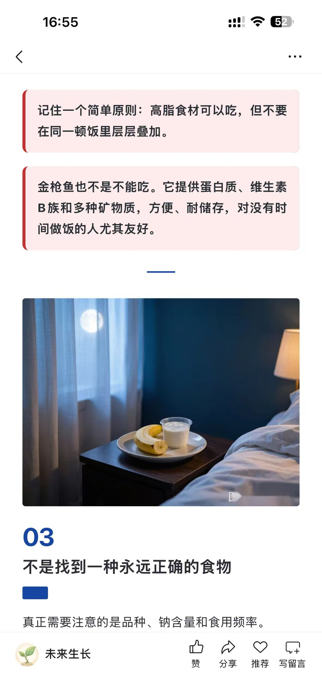
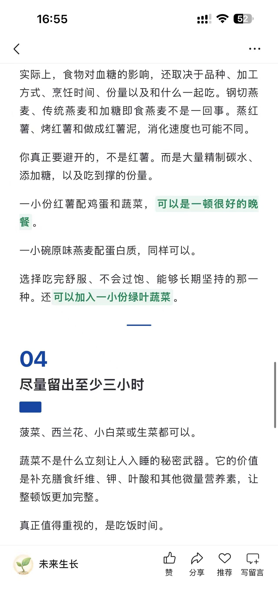
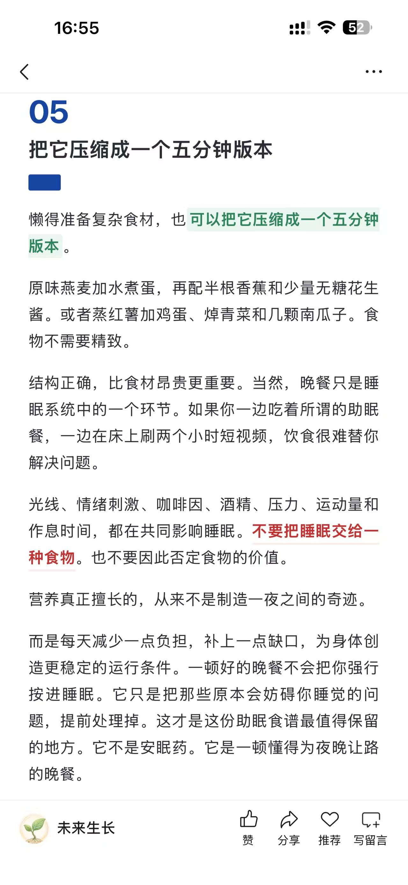

重点加粗
示例文字 原文关键词 保持原句。
verbatim_onlynative_static
72 个可执行渲染器。全部进入 Skill 包，但按自动安全、原文触发和手动指定分层启用。所有正文组件坚持原文逐字保真，不生成标签或结论。
示例文字 原文关键词 保持原句。
示例文字 原文关键词 保持原句。
示例文字 原文关键词 保持原句。
示例文字 原文关键词 保持原句。
示例文字 原文关键词 保持原句。
示例文字 原文关键词 保持原句。
示例文字 原文关键词 保持原句。
示例文字 原文关键词 保持原句。
示例文字 原文关键词 保持原句。
示例文字 47% 的原文关键词 保持原句。
示例文字 原文关键词 保持原句。
示例文字 原文关键词 保持原句。
01
原文章节标题
一
原文章节标题
I
原文章节标题
A
原文章节标题
PART 01
原文章节标题
原文章节标题
原文章节标题
原文章节标题
原文章节标题
原文章节标题
这是一句逐字来自原文的完整信息。
这是一句逐字来自原文的完整信息。
这是一句逐字来自原文的完整信息。
这是一句逐字来自原文的完整信息。
这是一句逐字来自原文的完整信息。
这是一句逐字来自原文的完整信息。
这是一句逐字来自原文的完整信息。
这是一句逐字来自原文的完整信息。
这是一句逐字来自原文的完整信息。
这是一句逐字来自原文的完整信息。
这是一句逐字来自原文的完整信息。
这是一句逐字来自原文的完整信息。
这是一句逐字来自原文的完整信息。
这是一句逐字来自原文的完整信息。
这是一句逐字来自原文的完整信息。
这是一句逐字来自原文的完整信息。
引用内容逐字来自原文。
引用内容逐字来自原文。
引用内容逐字来自原文。
引用内容逐字来自原文。
引用内容逐字来自原文。
原文中的来源
引用内容逐字来自原文。
第一条原文内容
第二条原文内容
第三条原文内容
●第一条原文内容
●第二条原文内容
●第三条原文内容
○第一条原文内容
○第二条原文内容
○第三条原文内容
■第一条原文内容
■第二条原文内容
■第三条原文内容
▲第一条原文内容
▲第二条原文内容
▲第三条原文内容
◆第一条原文内容
◆第二条原文内容
◆第三条原文内容
1.第一条原文内容
2.第二条原文内容
3.第三条原文内容
01第一条原文内容
02第二条原文内容
03第三条原文内容
STEP 01
第一条原文内容
STEP 02
第二条原文内容
STEP 03
第三条原文内容
01
第一条原文内容
02
第二条原文内容
03
第三条原文内容
| 项目 | 原文数据 |
| 样本A | 47% |
| 样本B | 62% |
| 指标 | 数值 |
| 完成率 | 72% |
| 增长 | 18% |
72%
原文中的数据说明
3.2 倍
原文指标
•47% 原文数据
•2026 年原文日期
•3.2 倍原文结果
原文完成比例 68%
原文中的一面 | 原文中的另一面 |
效率 = 有效产出 ÷ 时间
python build_article.py input.md
图：原文图片说明
作者：原文作者
发布日期：2026 年 7 月 19 日
阅读时间：约 6 分钟
栏目：知识笔记
来源：原文列出的研究资料
引文：原文中的完整出处
参考资料：原文来源一
参考资料：原文来源二
◆
原文结束语





